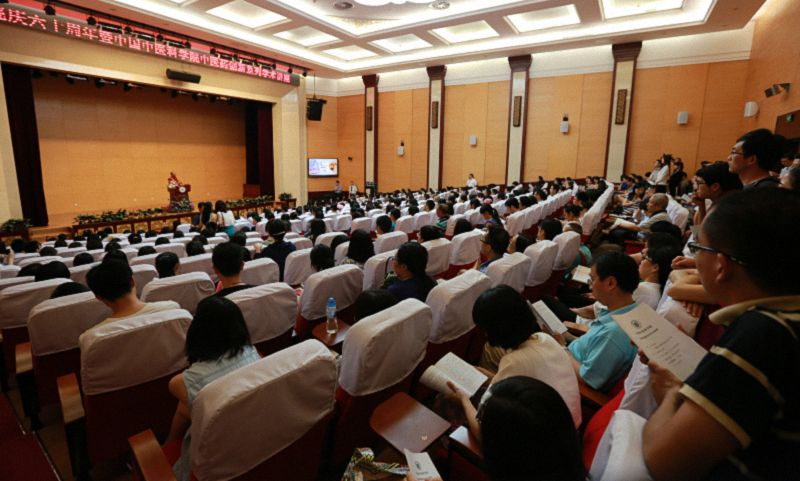
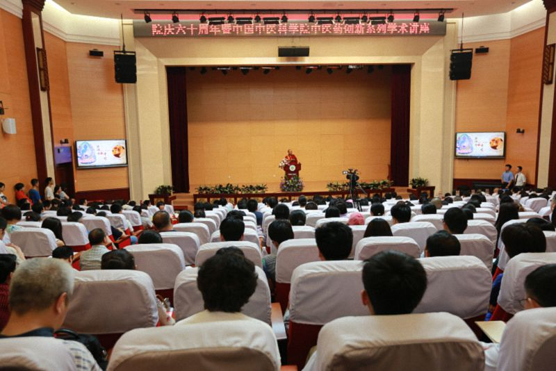
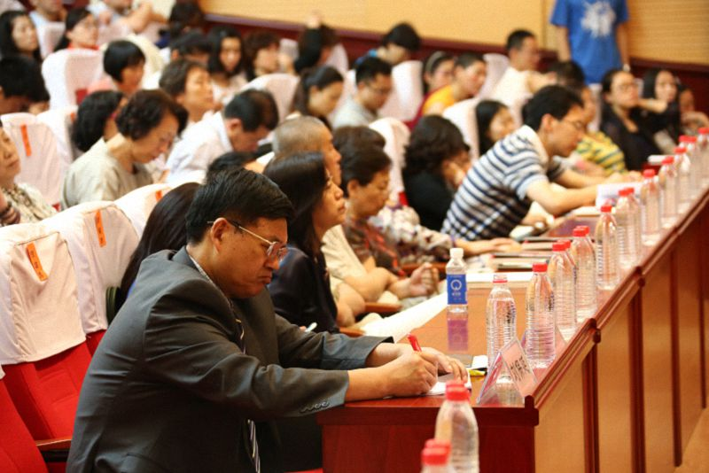

药师佛与中医——中国中医科学院演讲
『2015年6月5日』

主持人：
尊敬的索达吉堪布，尊敬的各位专家、同志们，下午好！今年是中国中医科学院建院六十周年，也是我们传承中医，推动中药发展非常关键的一年。在这个有意义的年份里，我们非常荣幸地邀请到了索达吉堪布来演讲“药师佛与中医”。现在，让我们以热烈的掌声，欢迎堪布！
尊敬的各位老师和同学们，大家好！很高兴能来到中医科学院，利用这个下午的时间和大家交流。这是我第一次来中医科学院，感觉这里非常殊胜，因为这里有这么多医学工作者在学习、研究中医的传承和理论，同时将自己所学到的知识、经验传递给有缘的人，这极其难得，值得赞叹！
在座的很多人都从事医生这一纯洁、高尚的职业，其实我自己也曾梦想过成为一名医生。三十多年前，我在初中毕业时去了一位藏医亲戚那里看病，于是有机会现场看他为别人治疗。这让我对从医产生了非常强烈的意乐，中考的时候甚至想辍学从医。虽然“辍学计划”最终没成功，但那次经历让我印象深刻。
因为我曾经非常想当医生，所以对学习中医、藏医、西医以及印度医学的人倍感亲切。虽然我最终没能从医，但我仍然安慰自己：表面上我是一名出家人，但实际上我也算是一名“医生”，因为三十多年来，我一直努力地给别人讲佛法，治疗人们的心理疾病。从这个角度来讲，我和大家有一个共同的目标——治病救人。
当人们有着共同的奋斗目标、向往和梦想时，哪怕职业、文化背景不一样，也仍能在交流中找到共鸣。所以，今天就和大家分享一下我对中医的想法。
藏医、中医，惺惺相惜
首先想和大家分享藏医与中医的相似之处。我在佛学院学过一些藏医课程，因此对藏医有一定的了解。其实，“望闻问切”并非只是中医的诊断手段，藏医的理论和实践也离不开它。例如，藏医和中医都可以通过把脉来诊断五脏六腑的病情，也可以通过观察病人的舌苔、眼睛来了解病人的身体状况。
此外，藏医和中医还都擅长用草药治病。藏医们常说：“对高明的医生来讲，山上所有的草都是药，各种各样的疾病也都有直接或间接的治疗方法。”此外，藏药的采集、处理方式也跟中药有许多相同的地方，比如，都可以采用阳光直晒或者阴干的方式处理等等。
大家都说“西医治标，中医治本”，但其实很难说有多少人真的对中医有信心。事实上，如果我们想学好一门学问，首先就要对它有坚定不移的信心，在这个基础上再去用功，才可能得到令人满意的结果。
对于世间的人、事、物，我们可以从局部的角度去观察，也可以从整体的角度去了解。藏医和中医就是从整体的角度来了解人的身体。老子在《道德经》中说：“人法地，地法天，天法道，道法自然。”像这种“人天合一”的道理，很难被西医理解。这句话看上去简单，却指出一个很重要的道理：我们的身体是一个世界，内心是一个世界，天地万物更是一个庞大的世界，而它们之间的相互作用就可能会导致身上产生各种疾病。由于西医仅从局部角度去观察人的身体，因此很难了解其背后复杂的因缘。
任何一件事物都有其因缘和结果，但除了极个别的人以外，世间很少有人真正掌握这样的因缘法则，就像很多学者说的那样：“真理往往掌握在极少数人的手里。”这在当今时代尤其突出，因为人们的身边时刻充斥着各种信息，但像藏医和中医这样宝贵的理论却不一定受到大众认可。
为什么你的病总也治不好？
我们该如何认识众生的种种身心疾病？按藏医的观点来讲，众生有四百零四种病。有些人可能看过《佛说佛医经》，这部佛经中宣讲了许多病因，如四季变化等等。我认为大家有必要了解一下其中的观点。藏医的《四部医典》中又将这四百零四种疾病分为四类，其中有一百零一种是前世的业力病，无论如何医治也无法痊愈；有一百零一种是源于即生中一些非人或鬼神的迫害，可以通过祈祷、佛事来遣除；又有一百零一种可以治愈，但如果放任不管，则会致命；还有一百零一种病，即使没有治疗，也不会有大碍，比如简单的感冒等身体上一些小小的不适。
不容小觑的神奇“安慰剂”
大家可能也注意到了，现代人有很多病都和心有关。佛教中讲，众生的病分为身病和心病。身体上的种种疾病可以依靠手术、服药等手段治疗，而心病，如贪、嗔、痴、骄傲、嫉妒等负面情绪以及抑郁症、自闭症等等，不论中医还是西医，都束手无策。
其实，医生既要医身，也要懂得医心；而对心的治疗，有时不需要太多的医学知识，一些简单的疏导都会对病人产生积极的作用。
大家都听说过“安慰剂效应”。虽然医学界和大众都对它抱有一定的质疑，有很多人认为这种现象非常少见，但不管怎么样，它在某些情况下的确管用。积极的信息能在人的心里产生正面力量，消极的信息能产生负面力量。所以，医生在诊断过程中的语言、表情也非常重要。有经验的医生在和病人沟通时，一般都会有些善巧方便，但有些年轻的医生就比较直接，有时会把严重的病情直接告诉病人。这样可能会让病人难以接受，心里倍加痛苦。
前段时间，我去看望了一位宗教界人士。当时他的心脏病非常严重，身体也很虚弱，医生说只剩一个月的生命，如果不及时手术，情况会更加危险。一般来讲，宗教界人士都有一些所谓的修行境界，对病痛的态度和其他人有点不同。他说：“我不怕死，因为生命总有一天要结束。既然医生说我只剩一个月的时间了，那我就抓紧时间准备身后事吧。”我向医生了解了一下他的情况，回来后和他讲了一些乐观的方面。在那之后，我感觉他的身体状况好了很多。可见，“安慰剂效应”的确很重要。在帮助病患时，医生的语言会对病人的心理产生很大的影响，有必要善巧地与病人沟通。
心病还需心药医
前面也提到过，现代人的疾病多多少少都和心有关系，因此，养心也能医病。藏医和中医都认为：上等人养心，中等人养气，下等人养身。心可以引发出非常强大的力量。《正法念处经》中说：“心清净故，血则清净，血清净故，颜色清净，颜色净故，端正无比，一切众生，爱乐瞻仰。”如果我们的心很清净，周遭的一切都将是过眼云烟，我们不会特别执著。其实，万事万物都瞬息万变，没有任何事是恒常不变的。如果大家明白了这个道理，心就会处于清净的状态，身体的气脉明点也会顺畅，这类似于中医所讲的“阴阳和合”，进而身体健康，相貌庄严。
我们有时也能从人们的状态中总结出这样的规律：内心脆弱的人在面临失业或失恋的痛苦时，内心烦躁、混乱，而且面目丑陋，一事无成。所以，在生活中保持清净心非常重要，这也是佛教中所追求的一种境界。
中医都是潜在的禅宗大师
我觉得西医和中医给人的感觉很不相同。好像很多西医说话、写字、做事情都特别快，给人一种急急忙忙的感觉，而很多中医往往带有一点禅宗的味道，不管是说话、走路还是写字、喝茶，都处在一种宁静的状态中，这自然也能让病人轻松一些。所以，作为一名医学工作者，首先应该使自己的心清净，这样不但令自己身心自在，事半功倍，也会给病人带来一些利益。如果你的心没有得到调伏，没有得到自在、平衡，不但自己会苦恼，工作也不一定会非常顺利。
我听说“中医”有两层意思，一是指中国的医学或者汉地的医学，另外一层意思指中庸，也就是要保持身体、心灵乃至天地万物之间的平衡。这在佛教里也被称作中道，即不堕于左边，也不堕于右边。其实我们做任何事都要保持平衡，比如，我们不得不吃饭、喝水，这是维持生存的基本需要，但我们不能暴饮暴食，否则就会引发疾病。从更广的范围来讲，世间有很多犯法的人，大都无法控制自己的欲望，行为偏激，比如因极度强烈的嗔恨而杀人等等。
以佛教的观点来讲，痛苦源于不认识内心的本来面目，行为放逸。放眼望去，我们生活中的感情纠葛、家庭纷争，乃至种种社会问题，的的确确都源于我们无法控制自己的内心。换个角度来看，世间的种种快乐，恰恰是依靠调伏自心，行持中道而得。

既要全球化，更要坚持本土特色
我认为藏医和中医的目的，都是将身体调理到一种平衡的状态，并逐渐让内心得以平和清净。从这个角度来看，藏医和中医对内心焦躁的现代人非常有价值。因此，我们应该研究这些流传千年的宝贵文化。
有人认为藏医和中医都是陈旧、古老、过时的东西，但实际上，它们蕴含着非常宝贵的价值。可能是受到西方文化，尤其是所谓的成功学、经济市场等潮流的影响，许多人都将有价值的传统文化抛之脑后，可能几十年后，这些就彻底被人们遗弃了。我们藏地就有很多珍贵的传统文化，包括藏医文化，但现在的年轻人却不了解它们的价值。汉地也一样。很多年轻人的价值观都有一种“全球化”的趋势，导致传统文化被逐渐遗忘。这种现象值得我们大家关注、思考。
药师佛在藏医学中的作用
在藏地，每位藏医都信仰药师佛，甚至通过供养、祈祷药师佛或者念诵药师佛的咒语等方式来帮助病患。中医科学院的老师们可能认为这是一种神秘主义，或者干脆认为这是迷信。大家可能会心存疑虑：“医学是一门严谨的科学，怎么会借助崇拜偶像来治病呢？”事实上，世界上有很多事情都不是我们的大脑所能消化和理解的，我们需要从正面、多维的角度去看待这个问题。
祈祷药师佛的确会产生一种能量，这在佛教中叫加持。很多人不承认佛菩萨的加持、咒语的力量，理由是看不见、摸不着。但世间万物之间的吸引力也是看不见、听不到、摸不着的，我们却不得不承认它的存在。世间有许许多多的力量，虽然无法被直接感知，但的的确确在我们的生活中起着非常大的作用。
无形的力量助你一臂之力
当在生活中遭遇巨变时，很多人就会选择相信以前不信的事物。比如，从来不信佛的人在遭遇强烈的痛苦时，很可能就会想到佛陀，甚至在佛前猛烈祈祷，寻求帮助；又或者当孩子面临高考时，原本不信佛的家长也会跑到寺院里求保佑；哪怕是平日里极其反感佛教的人，在危急时刻，即便嘴巴上不承认，私下也可能会做一些佛事。
绝大多数人在生活安逸、快乐的时候，只坚信“眼见为实”，而当自己遭遇极大变故，身心无比恐惧、无助时才意识到，其实在这个世界上，还有无形的力量可以为自己提供依靠，这就像不会游泳的人掉进水里后，拼命抓住救命浮木一样。
国外有一部影片叫《吸引力法则》，源于一本同名的书。这里面的很多理念跟佛教所提倡的以虔诚心、恭敬心来祈祷诸佛菩萨，进而获得加持的道理很像。比如，通过专注的祈祷，病人可能会康复，心情沉重的人也可能获得快乐。影片中所谓的“吸引力”，其实就是当你的心专注于某个人或某件事物时所产生的力量。比如说，你特别想念某个人，脑子里一直想着对方，到了一定的时候，你好像自然而然地就见到了这个人；或者你很想买一辆车、一栋房子，如果心一直专注在这件事情上，那你逐渐就会拥有一辆车或一栋房子。虽然我们表面上看不出心的力量，但它的确存在。
藏医和中医都信仰药师佛
我在一些藏医和中医的诊所中都见过药师佛的像，甚至有些海外的中医诊所中也有。这是一种非常好的现象。如果你有信仰的话，可以把药师佛当作救死扶伤的怙主，祈祷他加持自己对众生发起大慈大悲心，如果你没有信仰，也可以将药师佛像当作一幅艺术品挂起来。
大家可能都见过药师佛像。在汉传佛教的寺庙中，有些大雄宝殿中间是释迦牟尼佛，左右两边分别是阿弥陀佛和药师佛。阿弥陀佛的两侧是大势至菩萨和观音菩萨，药师佛的两侧是月光菩萨和日光菩萨。释迦牟尼佛是我们这个世界当前的佛，阿弥陀佛是西方的佛，而药师佛是东方的佛。虽然佛在大悲上没有差别，但因为药师佛在因地时曾发过十二大愿，所以他在治疗疾病、遣除痛苦方面格外有力量，这在《药师琉璃光如来本愿功德经》中都有记载。这部经在汉传佛教当中有很多种版本，常见的有义净和玄奘的译本，都非常有加持力。
信仰不同于迷信
我觉得，医生为患者看病时，除了依靠医学知识，还可以依靠信仰的力量。这种信仰绝对不是迷信。爱因斯坦的传记里提到，他曾说：“我不是一名宗教徒，但如果我是的话，我愿成为一名佛教徒。”爱因斯坦认为，佛教是跟科学不相违的宗教，它并不是迷信，而是一门值得人们信赖的理性科学。
标榜自己没有信仰也许并不值得赞叹，因为东西方的很多科学家在研究过人类漫长的历史后发现，世间当中有许多值得我们信仰的东西，这其中就包括佛教的科学性，乃至佛教中的医学观点。因此，作为一名现代医学工作者，不但要有过硬的医术，同时也可以借助神秘的力量、古老的传统来帮助病患。
很多人在年轻时思维比较简单，什么都不相信，但随着年龄的增长，慢慢就会相信一些事情，但大家千万不能迷信。什么是迷信呢？就是盲目相信原本不存在的东西存在，或者相信本来存在的东西不存在。大家在选择信仰的时候，应该用智慧去仔细辨别，否则只听别人的一面之词，多少都有一些危险。
很多人的语言并不可靠。对于自己喜欢的人，哪怕对方人品低劣，他们依然会用华丽的词藻赞叹，而对那些与自己合不来的人，哪怕对方人格贤善，他们还是会用非常不堪的词语去诽谤。这是网络时代的一种常见现象，但这些做法都是不客观、不诚实的，我们应该用客观的态度对待事物的现相和实相。
当然，每个人都想做个好人，但在生活、工作的重重逼迫下，人们有时不得不做一些违背良心的事。有些人不愿意说妄语，但有时迫于形势，也不得不说一些。佛教有时候把这种情况称为方便妄语，但不管是否为了“方便”，我们的确会说妄语，这是我们在面对现相与实相，或者说在面对现实与理想时，不得不面对的问题。
中医值得大家坚守
我对中医也有些期待和希望。首先，希望大家能坚持从事中医工作。很多大学生毕业后都不再从事与本专业相关的工作，选择转行，从事挣钱更多或者对自己事业、家庭更有利的行业。当然，这样的选择合情合理，但一般来讲，医生的梦想是治病救人，这个追求才是最重要的。作为一名医生，只要不是每天追求奢侈的享受，生活上不会有太大困难。
当前来讲，中医最重要的任务是什么呢？我认为就是要延续中医的传承。我有时候觉得中医都要断传承了，不知道再过五十年，还能不能延续下去？现在有些中医院，不要说发展，连生存都有很大困难。在这种情况下，医院不得不借助西医等其他的医疗方式，甚至借助一些中医并不赞同的方式来维持运转。我甚至看到有些中医院以西医为主，中医为辅。如果这种现象持续下去，可能大家对中医传承越来越丧失信心，甚至难以传给下一代。
藏传佛教也面临相似的情况。如果没有人教授、弘扬藏传佛教，那它有可能会断传承。因此，我们要领会前辈医师、大德们所讲授的珍贵道理并在实践中运用，只有这样，才能把中医传承给后人。与此同时，我们还要在不舍传统的基础上，借助现代的科学技术，坚持改革和创新，否则，在经济社会的大背景下，中医等古老的传统的确可能会消失。
坚持从医的初心
我经常和一些从事藏医工作的朋友讲：“作为医生，心里不能只关心赚多少钱，否则你的医术不一定很纯洁。这样不但对病人不负责、对自己的文化不负责，也是对后人不负责。这也说明你作为医生的心，已经被金钱所吞没了，医生这一职业的纯洁性会大打折扣。”所以，我还希望大家都能保持一颗纯正、坚定的心。既然大家的命运与中医这样一个伟大的使命有缘，那无论遇到什么样的困难，请大家都坚持下去。
我前段时间在加拿大蒙特利尔，有一天身体不太舒服，就去了当地的一家中医诊所。诊所的主人好像就是从中医科学院毕业的一对夫妻。丈夫做一些按摩、推拿的治疗，妻子为病人开药。我在他们的诊所里开了点药，吃了以后感觉非常好，当天就见效了。
我当时问了一些加拿大人对中医的看法，他们都对中医交口称赞，觉得中医特别好而且非常方便。一般来讲，在很多西方国家里，生病一般要先由家庭医生诊断，如果病情严重的话，才会由家庭医生推荐到医院里做进一步检查。但是在中医诊所里，大家看完病就可以现场抓药。
开诊所的这对夫妻告诉我，他们来蒙特利尔并不是为了赚钱，而是希望尽可能地将中医文化传承下去，并将它推广到西方社会。此外，他们也希望能在西方的文化环境下多学一些知识。我觉得像他们这样不以金钱为目的的行医，就像莲花一样纯洁，出淤泥而不染。
从事其他类型的工作，比如做生意等等，做不好也不要紧，因为那毕竟只是个人的得失，但医生的工作做不好，就关系到他人的生命。医生和老师这两种职业，如果做得好，会对无数人起到非常大的帮助，但如果做得不好，不仅对他人有害，对自己来讲，后果也不堪设想。佛教认为，任何行为都会产生业力，而恶业非常可怕。如果医生不对病人的生命负责任，就像有些医生为了金钱、地位、名声等等，不顾及病人的安危，就会造下非常可怕的恶业，后果极其严重。所以，医德非常重要。

行的不仅是医术，更是慈悲的情怀
希望大家心中始终有一种医生的情怀——慈悲，也就是佛教中观音菩萨的大慈大悲。医生需要有慈悲心，否则很多工作不一定对病人有利。世间当中有一种说法：律师的心是最硬的，医生的心是最软的。因为律师在打官司的过程中，哪怕明明知道雇主有罪，但为了打赢官司，他也一定要想办法为其辩护。所以，律师的心可能是最硬的。但作为医生，无论在任何时候，心都是柔软的，看到特别可怜的病人，哪怕是自己的怨敌，也会全力以赴地进行抢救和治疗。这和诸佛菩萨的精神很相似，而有些经论当中也讲到，末法时代，诸佛菩萨的确会以医生的身份来救度众生。
我以前翻译过《释迦牟尼佛广传》，其中就讲到，释迦牟尼佛在因地时曾发愿成为医生。因为哪怕是世间的国王、大臣，也还是会造很多恶业，而当一名医生，就会给众生带来很大利益。医生的能力非常大，因此，不论是学中医还是西医，都非常有意义。
我以前身体不好，经常要去看病，每次都会小心观察医生的态度。如果医生的态度很好，我的心里就很轻松，如果医生的态度不是很好，甚至无缘无故生气，我就有点“紧张害怕”。虽然当面不敢说什么，表现得毕恭毕敬，但事后我会把它写出来。（众笑）当然，我也写过一些医生对病人的慈悲和关爱，有些医生的确是展现出了大爱无疆的精神。
我们生病的时候都会切身体会到医生的重要性，但可能是大城市里的病人太多的缘故，从医久了，有些医生对病人的态度会逐渐变得麻木。我昨天去看病时，看到来来往往那么多病人，心想：如果我在这里做医生，可能也很难一直保持耐心和慈悲。所以我特别理解很多医生的心态和行为。
总的来讲，医生这一职业非常伟大，是病人们继续活着的一种因缘。因此，我们应该特别珍惜中医传统，将它传承下去。虽然在这个过程中，可能有很多人不理解、不支持，但我们还是要坚持做，因为从事这项事业并不是为了钱或名声，而是追求它本身的意义——治病救人。
昨天我遇到一位身居高位的藏族领导，他说：“我现在不想当官，想辞职做一名医生或老师。人的一生当中，能从事一项对众生有意义的工作才是最重要的。”我是学大乘佛法的，价值观可能跟世间人不太一样。也许世间人觉得家庭、生活、名声是人生中最重要的事情，但我觉得帮助身边的人更重要。这是药师佛的加持和力量，也是医学工作者不可推卸的责任。有了这种责任感，大家就会令这个世界更美好！